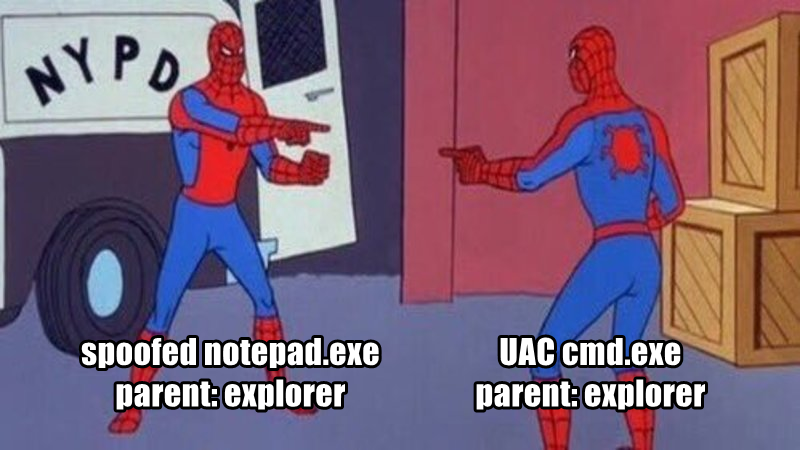

Parent PID Spoofing: Which Field to Believe
In the last post I fixed my sensor's process events coming through with half their fields empty. The next thing I want to build on those events is process lineage, and while reading up for it I found out the parent PID can be set to anything by whoever starts the process. So this post is about how that works, and a test I ran to see if my sensor already has a field that shows the real creator.
Some context: I'm building ReaperWatch, an EDR for Windows, and pretty much everything I want to do later with process lineage depends on the parent PID. Word starting PowerShell looks bad, explorer starting PowerShell is someone at a keyboard, and the parent PID is what tells those two apart. The problem is that whoever launches a process gets to choose what goes in that field.
How a caller picks the parent
CreateProcess takes an optional list of extra attributes. One of them is PROC_THREAD_ATTRIBUTE_PARENT_PROCESS: you give it a handle to any process you can open with the PROCESS_CREATE_PROCESS right, and Windows records that process as the parent. MITRE lists this as T1134.004. Here's the code from my test program:
SIZE_T size = 0;
// first call: no buffer, fails, but fills in size
InitializeProcThreadAttributeList(nullptr, 1, 0, &size);
attribute_buffer.resize(size);
// second call: builds the list for real
InitializeProcThreadAttributeList(list, 1, 0, &size);
UpdateProcThreadAttribute(list, 0,
PROC_THREAD_ATTRIBUTE_PARENT_PROCESS,
&parent, sizeof(HANDLE), nullptr, nullptr);parent is a handle to explorer.exe, and my test program then calls CreateProcessW with that list attached to launch notepad.
Yes, that's the same function called twice, and yes, the first call is supposed to fail. It took me a while to accept that failing is the normal first step here (Microsoft's own docs say the first call "will return an error by design"). The reason is that the attribute list is a block of memory whose layout belongs to Windows, so you can't work out its size from the headers, and Windows won't allocate it for you either. You hand it a buffer and tell it how big that buffer is, and that number is the only thing stopping it from writing past the end of your memory. So the first call passes no buffer and is really Windows answering a question: on my machine it returns FALSE with error 122 (ERROR_INSUFFICIENT_BUFFER) and writes the size it wants into size. Then you allocate that much and call it again for real.
On my machine the answer was 48 bytes for one attribute, 72 for two and 96 for three, so 24 bytes each plus 24 of overhead. That pattern is just something I noticed across three numbers, so I wouldn't hardcode it. I also handed it an 8-byte buffer on purpose to see what it would do, and it refused with the same error and told me 48 again without writing anything, which is exactly what the size argument is for.
The other field
My agent reads the NT Kernel Logger, an Event Tracing for Windows (ETW) session the kernel writes to directly. Each event has a payload with the actual details, plus a small header that ETW stamps on every event. The payload has ParentId, the field the caller controls. The header has ProcessId, which the caller never gets a say in. As far as I understand it, ETW fills the header in when the event is written, and for a process-create that happens inside the kernel while the real caller's thread is still running, so it should name whoever actually made the call.
Velociraptor wrote this up in ETW Part 2: Process Parent Spoofing and ships an artifact that makes the same comparison. That uses the newer Microsoft-Windows-Kernel-Process provider, though, and I use the old kernel logger, which is a different path into ETW. I couldn't find anything from Microsoft saying its header behaves the same way.
Then I went to read the header values out of my agent's output and found they weren't there. I had stored header_pid in an earlier ticket and never written it out anywhere, which is a very me thing to do. I added a temporary line that logged the child, the claimed parent and header_pid to a file.
What I ran
Three launches with the agent elevated, on Windows 11 build 26200, once each: a plain CreateProcess as a control, the spoof above, and a real UAC prompt from right-clicking cmd.exe and choosing "Run as administrator".
| Case | Child | ParentId (payload) | ProcessId (header) |
|---|---|---|---|
| Normal launch | notepad 10488 | 32744 | 32744 |
| Spoofed parent | notepad 24412 | 11396 (explorer) | 28724 |
| UAC elevation | cmd 21628 | 11396 (explorer) | 10564 |
In the normal launch both fields name my test program, 32744. In the spoofed launch the payload says explorer, 11396, while the header says 28724, my test program, the process that really called CreateProcess. So the kernel logger header does give away the real creator.
The UAC row
I added the third case because I wanted something legitimate to compare against, and I'm glad I did. The elevated cmd.exe also claims explorer as its parent, and its header says 10564. A normal "Run as administrator" and my spoof look exactly the same in these two fields.

To find out what 10564 was, I checked which process hosts the Appinfo service. It was a svchost.exe with that PID, and AppInfo is the service that launches elevated processes after you accept the prompt. The same capture shows consent.exe, the UAC dialog itself, with both fields set to 10564. Velociraptor's post lists the UAC prompt as one of the legitimate cases of parent spoofing ("the UAC manager launches the target program and spoofs the parent process"), which matches what I saw, and MITRE's technique page says the same thing (UAC sets the parent "after a requested elevated process is spawned by SYSTEM (typically via svchost.exe or consent.exe)"). I haven't found Microsoft documenting it themselves, though.
For any rule built on this, "the two fields disagree" isn't enough on its own, because every UAC elevation on the machine would set it off. The rule also needs to know which creators are legitimate brokers, like AppInfo. I haven't built that yet, so that's a later post.
What this does not tell me
- Each case ran once, on one Windows build. I haven't tried any other versions.
- The header names whoever called create, which isn't always who you'd want to blame. If an attacker injects code into a trusted process and launches from inside it, the header will correctly name that trusted process. I don't have a good answer for that one yet.
- This is all user mode. When I get to the driver,
PsSetCreateProcessNotifyRoutineExhands over the creating thread directly, so it won't depend on how ETW stamps its events.
Next steps
Next is turning header_pid into a proper creator field on the event, and then building the allowlist of brokers like AppInfo so the comparison stops going off every time someone elevates a prompt.
Reading and credits
- Velociraptor, ETW Part 2: Process Parent Spoofing, for the write-up and the UAC false positive.
- Velociraptor, Windows.ETW.DetectProcessSpoofing, the artifact.
- MITRE ATT&CK T1134.004 and detection strategy DET0489.
- InitializeProcThreadAttributeList and UpdateProcThreadAttribute, Microsoft Learn.
- PS_CREATE_NOTIFY_INFO, Microsoft Learn, for
CreatingThreadId.